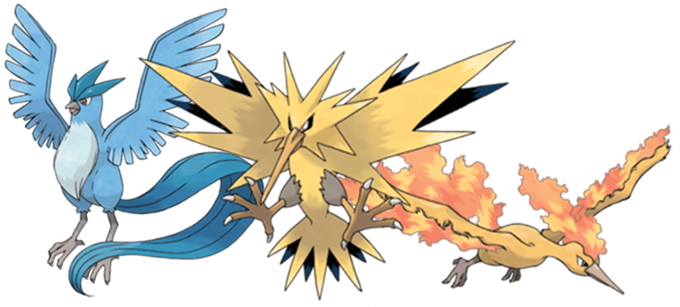

The Three Legendary Bird Pokemon

Pokemon: Ruby and Sapphire Little Root Town
Overview:
Articuno's Story:
Zapdos's Story:
Moltres's Story:
Popularity of the LB's from most to least popular:
- Zapdos
- Moltres
- Articuno
For more infromation on your favorite pokemon, check out the
Pokedex
Take the test below to see which of the Legendary Pokemon
you are!!
Legendary Bird Quiz